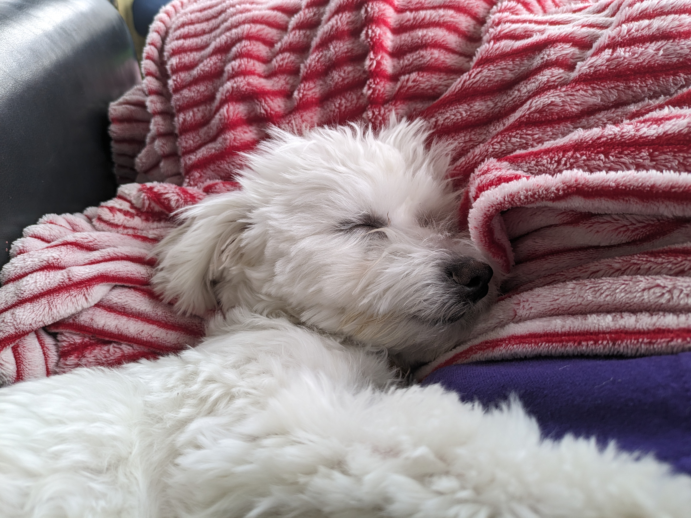

Editing Images
Image 1
I cropped and adjusted the brightness/contrast of the image. Adjusted image dpi to 150 and resized image.
Image 2

Adjusted the crop, brightness/contrast, and added question marks above his head. I also added a drop shadow under those question marks. Adjusted image size to 150 dpi and resized.
Image 3
I rotated, cropped, and adjusted the brightness. Adjusted the image dpi to 150 and resized.
Image 4

I cropped and adjusted the brightness. I also adjusted the dpin to 150 and resized.
Image 5
Cropped and adjusted the brightness/contrast. Rotated the image. Adjusted dpi to 150 and resized image.